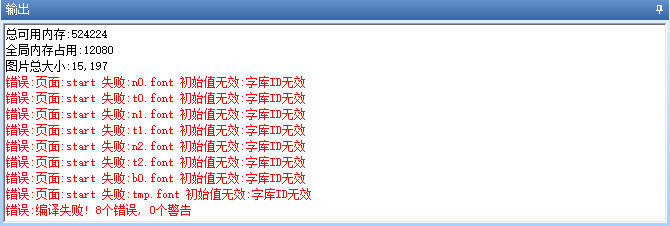
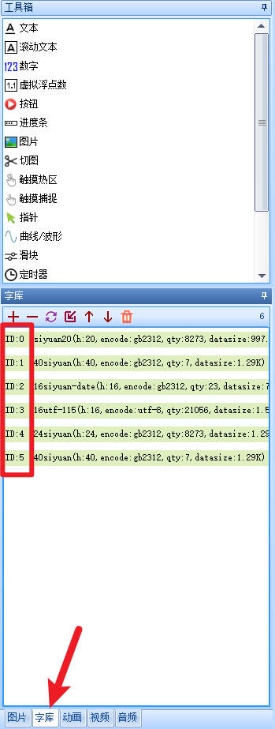
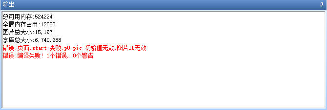
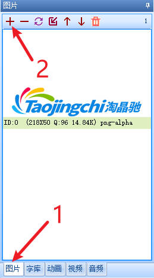
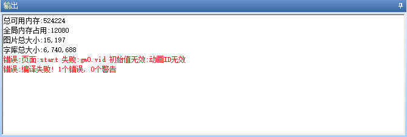
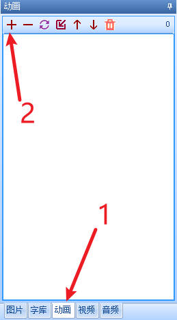
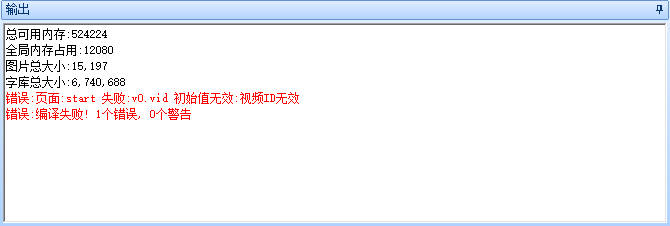
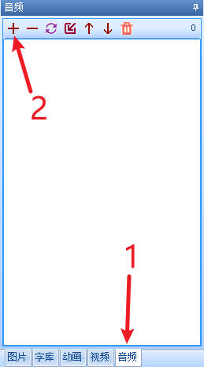
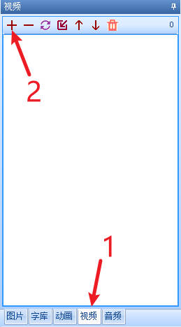
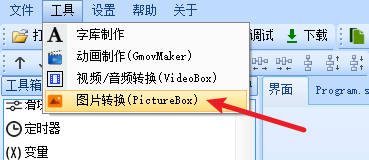

编译报错：XXX初始值无效
字库ID无效

出现这类错误是因为：控件使用了字库。但是字库资源中不存在这个字库。解决办法是添加一个字库文件到字库资源中，并修改控件的字库属性对应到指定的字库ID。
如何制作字库和添加字库，请参阅 创建字库和导入字库
配置字库时,应保证font属性设置的值所对应的字库是存在的

图片ID无效

出现这类错误是因为：选择了页面/控件的sta为图片，但是图片资源中又不存在这个ID的图片，或者你没有配置控件对应的属性。解决办法是添加对应的图片文件到图片资源中，并修改控件的图片属性对应到指定的图片ID。

动画ID无效

动画控件仅x系列支持
出现这类错误是因为：添加了动画控件，但是动画资源中又不存在这个动画，或者你没有配置动画控件的vid属性。解决办法是添加对应的动画文件到动画资源中，并修改动画控件的vid属性对应到指定的动画ID。
动画的转换方法
添加动画（可以添加转换后的gmov文件，也可以添加gif文件，会自动转换成动画）

音频ID无效

音频控件仅x3、x5系列支持
出现这类错误是因为：添加了音频控件，但是音频资源中又不存在这个音频，或者你没有配置音频控件的vid属性。解决办法是添加对应的音频文件到音频资源中，并修改音频控件的vid属性对应到指定的音频ID。
音频的转换方法
音频的添加方法

视频ID无效
视频控件仅x5系列支持
出现这类错误是因为：添加了视频控件，但是视频资源中又不存在这个视频，或者你没有配置视频控件的vid属性。解决办法是添加对应的视频文件到视频资源中，并修改视频控件的vid属性对应到指定的视频ID。
视频的转换方法
视频的添加方法

图片转换工具

图片转换工具是给外部图片控件使用的，这个功能仅x系列支持
图片转换工具转化出来的是xi格式，支持透明图层
外部图片控件支持jpg和xi格式，普通图片可以直接使用jpg格式，如果有透明图层，需要使用图片转换工具将png转换为xi格式